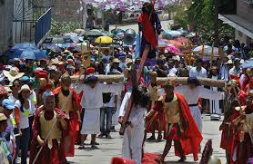

CELEBRACIÓN DE LA SEMANA SANTA
¿EN QUÉ CONSISTE LA SEMANA SANTA?
A la Semana Santa se le llamaba en un principio “La Gran Semana”, a sus días se les dice días santos, que fue adoptada desde la llegada de los españoles en 1519, ellos trajeron la religión católica. Ésta semana comienza con el Domingo de Ramos y termina con el Domingo de Pascua. Es la conmemoración anual cristiana de la Pasión, Muerte y Resurrección de Jesús de Nazaret. Por eso, es un período de intensa actividad litúrgica dentro de las diversas confesiones cristianas. Da comienzo el Domingo de Ramos y finaliza el Domingo de Resurrección
Vivir la Semana Santa es acompañar a Jesús con nuestra oración, sacrificios y el arrepentimiento de nuestros pecados. Asistir al Sacramento de la Penitencia en estos días para morir al pecado y resucitar con Cristo el día de Pascua.Lo importante de este tiempo no es el recordar con tristeza lo que Cristo padeció, sino entender por qué murió y resucitó.La Semana Santa fue la última semana de Cristo en la tierra. Su Resurrección nos recuerda que los hombres fuimos creados para vivir eternamente junto a Dios.
DIAS DE LA CELEBRACIÓN
JUEVES SANTO:
Este día recordamos la Última Cena de Jesús con sus apóstoles en la que les lavó los pies dándonos un ejemplo de servicialidad. En la Última Cena, Jesús se quedó con nosotros en el pan y en el vino, nos dejó su cuerpo y su sangre. Es el jueves santo cuando instituyó la Eucaristía y el Sacerdocio. Al terminar la última cena, Jesús se fue a orar, al Huerto de los Olivos. Ahí pasó toda la noche y después de mucho tiempo de oración, llegaron a aprehenderlo.
VIERNES SANTO:
Ese día recordamos la Pasión de Nuestro Señor: Su prisión, los interrogatorios de Herodes y Pilato; la flagelación, la coronación de espinas y la crucifixión. Lo conmemoramos con un Via Crucis solemne y con la ceremonia de la Adoración de la Cruz.
SÁBADO SANTO:
Este día propiamente no hay culto oficial. Es día de luto por la muerte del Salvador. Continúa durante el día la visita de los monumentos, la celebración del Vía crucis y otras prácticas piadosas. Al anochecer empieza la gran Vigilia Pascual, que en su primera parte (bendición el fuego nuevo y del agua, llecturas, letanías, profesión de fe y Bautizos) corresponde propiamente al Sábado santo; pero la Misa de Gloria, solemnísima, con volteo de campanas y llena de aleluyas, corresponde a la celebración pascual de la Resurrección.
DOMINGO DE RESURRECCIÓN:
Es el día más importante y más alegre para todos nosotros, los católicos, ya que Jesús venció a la muerte y nos dio la vida. Esto quiere decir que Cristo nos da la oportunidad de salvarnos, de entrar al Cielo y vivir siempre felices en compañía de Dios. Pascua es el paso de la muerte a la vida. Es el día en que Jesucristo resucita después de la crucifixión, va al encuentro con sus apóstoles y luego sube hacia los cielos.

¿CÓMO CELEBRAN OTRAS RELIGIONES?
En Semana Santa grupos cristianos no católicos también celebran actividades para recordar la muerte y resurrección de Jesús.
Testigos de Jehová
Los Testigos de Jehová consideran que la Semana Mayor es una fecha común; ellos celebran anualmente la muerte de Jesús, pero lo hacen según el calendario arameo. En dicha reunión comparten vino y pan, tal como lo hizo el Señor en la última cena. “Nosotros celebramos la muerte de Jesús con una cena, cada año la fecha puede variar dependiendo del calendario arameo. Durante la Semana Santa que llaman los católicos, los Testigos de Jehová comemos normalmente, ya que consideramos que esos son días común y corriente. A parte de ellos no creemos en santos ni imágenes”, comentó una feligrés Testigo de Jehová.
Adventistas
En el sentir de los adventistas, la Semana Santa es la conmemoración de la pasión de Cristo; sin embargo, los seis días los trabajan normalmente, además, no tienen prohibición para ingerir alimentos, aunque tienden a ser vegetarianos.
“Nosotros nos ceñimos a la Biblia y en ella no dice en ninguna parte que debemos descansar; lo que se señala allí es que hay que descansar antes de la preparación, es decir, el viernes. El sábado es el día de nuestro culto. Y el domingo también oramos.
“Un acto que reviste de mucha importancia es el lavatorio de pies, pero esto lo hacemos cada tres meses; adicionalmente, hacemos una cena con pan y con vino”, dijo Pedro Obando, adventista desde hace 40 años.
Para los adventistas, “las estaciones del vía crucis son 14 crucecitas de madera, pegadas a las paredes de una iglesia. Los 14 cuadros representan varias escenas de la vida de Cristo camino al calvario que no son estrictamente necesarias.
-
Semana santa en mi comunidad
Se muestra la semana santa en Atlixco, Puebla
Semana santa en Tlaxcala
Se muestra la forma de celebración en Tlaxcala
Semana santa en Iztapalapa
Se explica la semana santa en Iztapalapa
Semana santa en Oaxaca
Se muestra la forma de celebrar semana santa en Oaxaca

Aplicacion Dos
Montserrat Akari Álvarez Piedra
SEMANA SANTA EN MI COMUNIDAD
"A nosotros nos gusta mucho el estar celebrando estas fechas ya que nos hacen sentir más cerca al mundo celestial" afirmó una atlixquense durante la visita alas siete iglesias.
Entre las tradiciones que han distinguido a Atlixco es la ‘Procesión del Silencio’ en la comunidad, y la ‘Procesión de Engrillados’. Cabe mencionar que ambos eventos son actos de penitencia, fe y de arrepentimiento, en los cuales se incluye también un recorrido por la comunidad llamado "La visita a las siete iglesias".
Camacho Corripio invitó a todos los poblanos y personas de otros estados vecinos a admirar el tapete monumental de “Flores de Primavera”, el cual fue hecho con más de 160 mil plantas y con imágenes alusivas a esta temporada de Semana Santa, y otro con diseños representativos de Atlixco.

El sábado de gloria, muchas familias suelen ir a balbearios. Hay una prcesión en la que se hace un rosario muy largo que empieza a las 8:00 pm y termina a las 12:00am de el domingo más tarde sale una procesión como a las 10:00am y sale una imagen de cristo resucitado y al llegar a la iglesia se hace una misa y termina la celebracion de semana santa en mi comunnidad y se supone que el día domingo es un día de guardar, es decir de descanso y es mejor no hacer nada, ya que es el día en "que se abre la gloria."